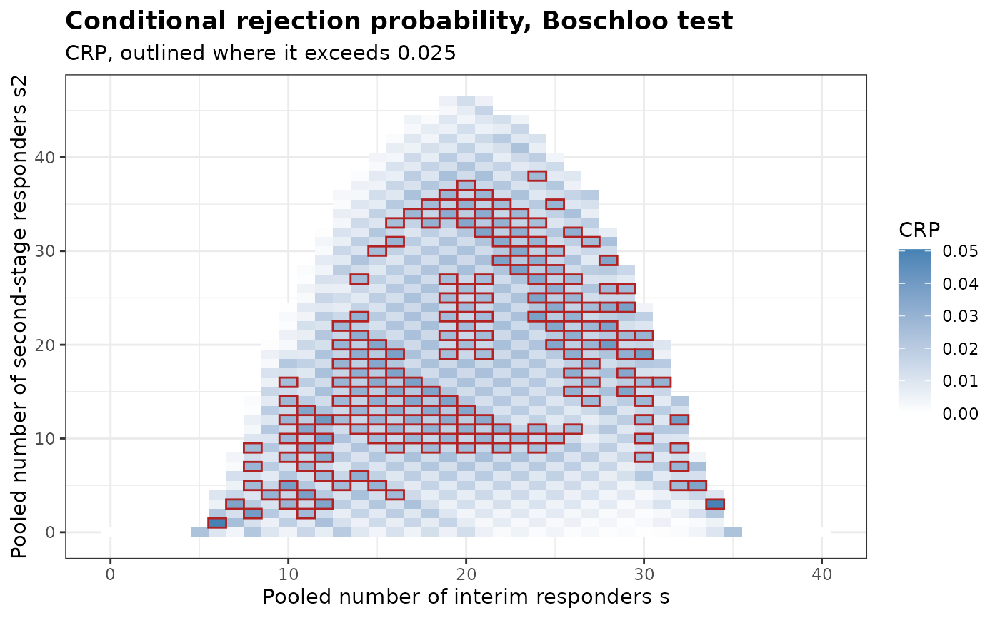

Conditional Rejection Probabilities of a Blinded Sample Size Re-estimation Design
Source:R/BinaryCondRejectBSSR.R
BinaryCondRejectBSSR.RdComputes, under the null hypothesis of equal response probabilities, the probability that a two-arm trial with a binary endpoint and blinded sample size re-estimation (BSSR) rejects the null hypothesis given the pooled number of responders at the interim analysis and in the second stage. These conditional rejection probabilities do not depend on the common response probability, and the type I error rate is their average over the binomial distribution of the two pooled counts. The type I error rate can also be decomposed by the pooled number of interim responders, which shows the interim outcomes that raise it.
Usage
BinaryCondRejectBSSR(
Delta.A,
N1,
N2,
omega = NULL,
r,
alpha,
tar.power,
Test,
restricted = FALSE,
alternative = c("greater", "less", "two.sided"),
tsmethod = c("minlike", "central", "blaker"),
n.grid = 100,
bb.gamma = 0,
effect = c("RD", "RR", "OR"),
ss.method = c("exact", "standard", "null.variance", "alternative.variance"),
ss.Test = Test,
ss.alpha = alpha,
rounding = c("group", "friede-kieser", "total", "nearest"),
search = c("crossing", "smallest", "stable"),
search.limit = c(2, 50),
N.min = NULL,
N.max = NULL,
n.interim = NULL,
theta = NULL,
margin = 0,
ref.pvalue = FALSE
)Arguments
- Delta.A
Assumed treatment effect, on the scale given by
effect, used to split the blinded pooled proportion into group-specific proportions- N1
Initial sample size of group 1
- N2
Initial sample size of group 2
- omega
Fraction of the initial sample size observed at the interim analysis. The interim size of group 2 is
ceiling(omega N2)and that of group 1 isceiling(r ceiling(omega N2)), so the interim analysis keeps the allocation ratio. Eitheromegaorn.interimmust be supplied- r
Allocation ratio to group 1
- alpha
Level of significance of the final analysis, for the alternative specified by
alternative- tar.power
Target power
- Test
Type of statistical test of the final analysis. Options:
'Chisq','Fisher','Fisher-midP','Z-pool','Boschloo','Blackwelder'or'Farrington-Manning'- restricted
Logical. If
TRUE, the re-estimated sample size is not allowed to fall below the initial sample size. Default isFALSE- alternative
Direction of the alternative hypothesis. Options:
'greater'(default),'less'or'two.sided'- tsmethod
Convention used to construct the two-sided version of the conditional tests, see
BinaryRR. Options:'minlike'(default),'central'or'blaker'- n.grid
Number of grid points used to search over the nuisance parameter of the unconditional tests. Default is 100
- bb.gamma
Confidence level parameter of the Berger-Boos procedure. The default of 0 disables the procedure
- effect
Scale of
Delta.AandDelta.T. Options:'RD'(default) for the risk differencep1 - p2,'RR'for the risk ratiop1 / p2or'OR'for the odds ratio- ss.method
How the sample size is re-estimated from the recovered proportions. Options:
'exact'(default),'standard','null.variance'or'alternative.variance', as inBinarySampleSize- ss.Test
Test whose exact power is used for the re-estimation when
ss.method = 'exact'. Default isTest- ss.alpha
Level of significance used for the re-estimation. Default is
alpha- rounding
How the re-estimated sample size is turned into whole numbers. Options:
'group'(default),'friede-kieser','total'or'nearest'. Only'group'is available withss.method = 'exact'. See Details- search
How the exact re-estimation chooses the sample size when
ss.method = 'exact':'crossing'(default),'smallest'or'stable', as inBinarySampleSize. Ignored by the other methods- search.limit
Limit of the size of group 2 examined by
search = 'stable', as inBinarySampleSize. Default isc(2, 50)- N.min
Lower bound on the final total sample size, or
NULL(default) for none beyond the interim total. It can be used to keep the patients who are already enrolled but not yet evaluated at the interim analysis- N.max
Upper bound on the final total sample size, or
NULL(default) for none- n.interim
Interim sample sizes of group 1 and group 2, as a vector of length two. An alternative to
omega- theta
Optional vector of common response probabilities at which the type I error rate is decomposed by the pooled number of interim responders. Default is
NULL, which skips the decomposition- margin
Must be 0, the default, since only tests of superiority are covered (see Details). The argument keeps the arguments the same as those of
BinaryTypeIErrorBSSR- ref.pvalue
Logical. If
TRUE, the maximization over the nuisance parameter of the unconditional tests is refined between the grid points, seeBinaryRR. Default isFALSE. It applies to the final analysis and to the exact re-estimation
Value
An object of class bbssr_crp, a data frame with one row for every pair
of pooled responder counts that the design can produce, ordered by s and then
by s2, containing:
- s
Pooled number of responders at the interim analysis
- s2
Pooled number of responders in the second stage
- N1
Final sample size of group 1 reached from
s- N2
Final sample size of group 2 reached from
s- CRP
Rejection probability given
sands2- CRP.total
Rejection probability given only the total number of responders
s + s2, when the responder count of group 1 is treated as one hypergeometric count among allN1 + N2patients
The attribute max is a data frame with the largest value of each of the two
probabilities and the first outcome, in the order of the rows, at which it is attained
up to rounding error, the attribute exceed gives the
number of outcomes at which each of them exceeds alpha, and the attribute
reestimation holds the final sample size for every pooled number of interim
responders. When theta is supplied, the attribute by.s is a data frame
with one row for each value of theta and of s, containing the probability
prob.s of s, the type I error rate TIE.s given s and the
contribution prob.s * TIE.s of s to the type I error rate, and the
attribute TIE gives the type I error rate at each value of theta.
Details
Let n11 and n12 be the interim sample sizes of the two groups, and let
n21(s) and n22(s) be the second-stage sizes reached from the pooled
number s of interim responders. Under the null hypothesis both groups share the
response probability theta. Given s, the number of interim responders in
group 1 is hypergeometric, being the number of group 1 patients among s
responders drawn from n11 + n12 patients. Given the pooled number s2 of
second-stage responders, the number of second-stage responders in group 1 is an
independent hypergeometric count of the same kind. CRP sums the rejection region
of the final sample size over these two distributions and does not depend on
theta. The type I error rate is
sum_s sum_s2 b(s; n11 + n12, theta) b(s2; n21(s) + n22(s), theta) CRP(s, s2),
where b is the binomial probability, so it is at most alpha for every
theta whenever CRP is at most alpha for every outcome.
CRP.total is the conditional size of the final test given the total number of
responders, with the responder count of group 1 hypergeometric among all final
patients. Fisher's exact test keeps it at or below alpha by construction. The
allocation is fixed within each stage, so the responder count of group 1 given
s and s2 is the sum of two hypergeometric counts rather than one, and
CRP differs from CRP.total. When the final sample size does not depend
on s, averaging CRP over the hypergeometric distribution of s
given the total gives CRP.total. Re-estimation makes the final sample size
depend on s, and this averaging no longer holds. Outcomes with CRP above
alpha therefore occur in a fixed-sample design as well, and whether they raise
the type I error rate is seen from the decomposition by s rather than from
CRP alone.
Only tests of superiority are covered. With a non-inferiority margin the two response probabilities differ on the boundary of the null hypothesis, and the conditional distributions of the responder counts then depend on them.
Author
Gosuke Homma (my.name.is.gosuke@gmail.com)
Examples
crp <- BinaryCondRejectBSSR(
Delta.A = 0.3, N1 = 12, N2 = 12, n.interim = c(6, 6), r = 1,
alpha = 0.025, tar.power = 0.8, Test = 'Fisher', ss.method = 'standard',
theta = c(0.3, 0.5)
)
print(crp)
#> Conditional rejection probabilities of blinded sample size re-estimation
#> for a binary endpoint, under equal response probabilities
#>
#> Test : Fisher
#> Alternative : greater
#> Initial size : N1 = 12, N2 = 12
#> Interim size : n1 = 6, n2 = 6
#> Assumed effect : 0.3 (RD)
#> Nominal level : 0.025
#> Outcomes : 567 pairs (s, s2)
#> Above the level : 8 for CRP, 0 for CRP.total
#>
#> Largest conditional rejection probability
#> Quantity value s s2 N1 N2
#> CRP 0.02597 2 3 24 24
#> CRP.total 0.02500 3 15 32 32
#>
#> Type I error rate over 2 values of theta: largest 0.01581 at theta = 0.5
attr(crp, 'TIE')
#> theta TIE
#> 1 0.3 0.01387632
#> 2 0.5 0.01580768
# \donttest{
crp <- BinaryCondRejectBSSR(
Delta.A = 0.3, N1 = 39, N2 = 39, n.interim = c(20, 20), r = 1,
alpha = 0.025, tar.power = 0.8, Test = 'Boschloo', ss.method = 'standard'
)
attr(crp, 'max')
#> Quantity value s s2 N1 N2
#> 1 CRP 0.05049005 6 1 22 22
#> 2 CRP.total 0.04728609 6 1 22 22
plot(crp)

# }